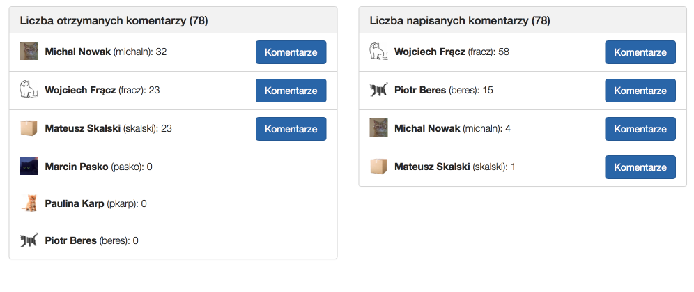

Our interests & work
Wojciech Frącz, Jacek Dajda, Marek Kisiel-Dorohinicki
Nov 2015
1. Code Reviews on Mobile Devices
2. Gamification in Software Education
3. Gamification and skills assessment in Software Teams
Code reviews
- readable source code
- fewer bugs
- smaller bus factor
- knowledge and skills spread
Can we review the source code on a
Mobile application
- Android 2.2+
- syntax coloring
-
comments:
- comments sharing via , , , ...
Mobile vs Desktop
two tasks (source code with smells to review)
20 minutes per task
students of the 3rd year CS, BSc
using either mobile or
PC review tool
Excerpt of the code
public Line(Context context, SourceFile sourceFile, int lineNumber,
String lineOfCode, boolean syntaxColor) {
super(context);
this.sourceFile = sourceFile;
this._lineNumber = lineNumber;
this._lineOfCode = lineOfCode;
setOrientation(LinearLayout.HORIZONTAL);
lineNumberView = new TextView(getContext());
lineNumberView.setText(String.format("%d.", lineNumber));
lineNumberView.setSingleLine();
lineNumberView.setWidth(30);
addView(lineNumberView);
TextView lineContent = new TextView(getContext());
addLineContent(syntaxColor);
}
Total Reviews (181)
Mobile
PC
Total Comments (2426)
Mobile
PC
Avg detected smells per review
We have gathered equal results from both devices.
p = 0.81
(for the total number of detected smells)
It means that
- mobile code reviews are as efficient as PC
- mobile devices are comfortable for reading source code
We can review a code on a smartphone!
1. Code Reviews on Mobile Devices
2. Gamification in Software Education
3. Gamification and skills assessment in Software Teams
We tried to gamify University classes dedicated to...
- Git version control system
- code quality and smell detection
Average number of passed exercises was
10.84 for classes with
gamification and
9.74 for those without it
Gamified students managed to submit
one attempt more
on average in the same time.
Moreover,
they liked the game elements
as they assessed the classes with gamification higher
What about other types of classes?
We tried to gamify University classes dedicated to...
- Git version control system
- code quality and smell detection
We have not analyzed the results yet, but...
1. Code Reviews on Mobile Devices
2. Gamification in Software Education
3. Gamification and skills assessment in Software Teams
Idea
- Valuable data in Code Review system (Gerrit)
- Nobody uses it to improve team work
- Let's try to produce some recommendations
- Developers are not encouraged to do reviews
- Let's introduce gamification (emhpasize reviewers effort)
Assumptions
- Open architecture (integrates with Gerrit and Stash)
- User selects project and time period
- The tool produces interesting results :-)
Received and given comments

Average length of the comment
Average number of received comments per change
Developers ranking (Most Valued Developer)
Developer Result = Number of changes +
2 * Number of reviewed changes -
0.5 * Number of NT changes -
0.1 * Number of received comments +
0.05 * Number of written comments +
0.05* Average length of comment -
0.15 * Number of comments per change
Status and plans
- Used and tests in our teams
- Closer integration with Gerrit
- New metrics and data sources (Continuous Integration?)